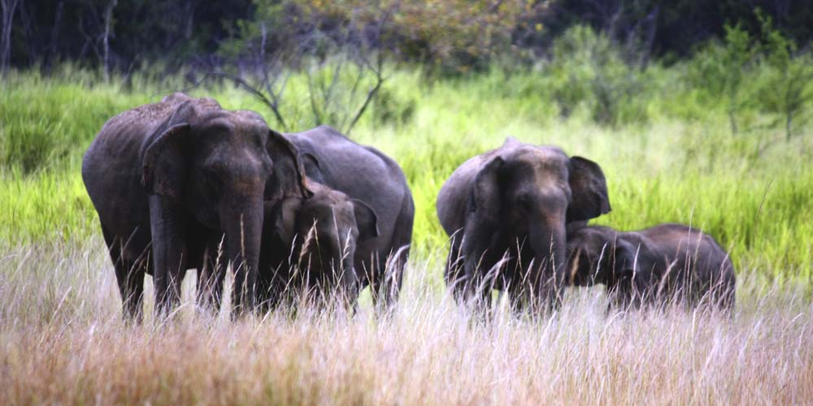
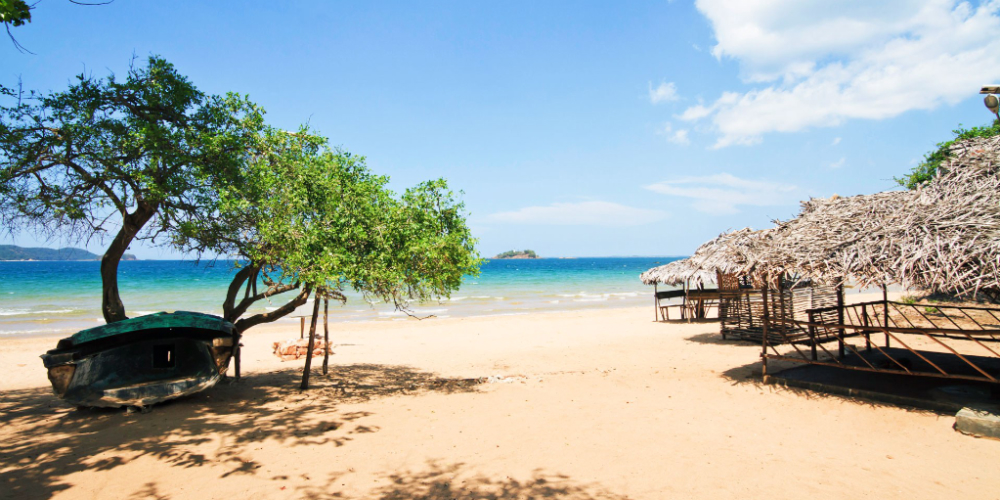
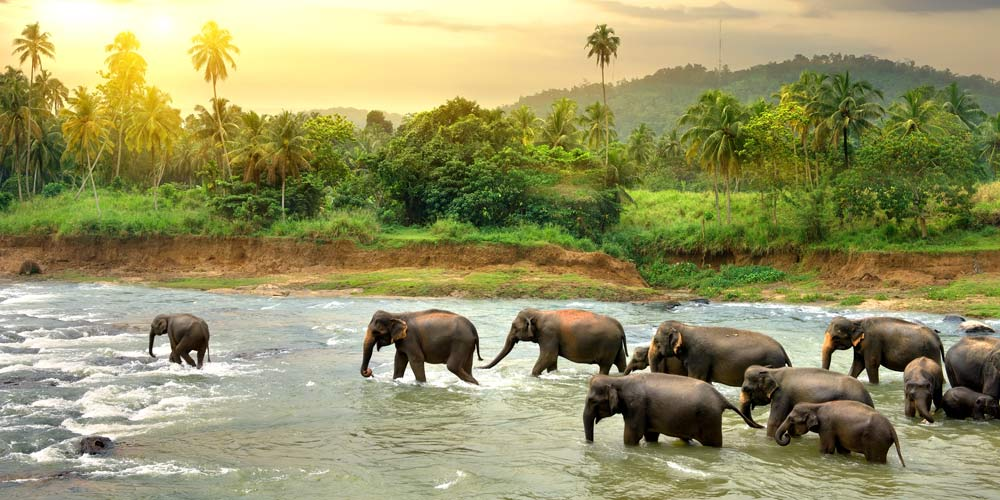
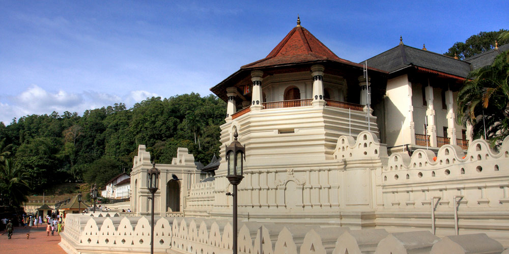

Sigiriya
Also known as Lion's Rock, Sigiriya is a rock fortress and palace situated
in the Matale district. Visitors can climb up to the ancient ruins, which are surrounded
by gardens, ponds, and magnificent frescoes. The UNESCO World Heritage Site is one of
the best ancient sites in the country. Head to the top of Sigiriya to see wonderful,
dramatic views of the rolling hills in the jungle below.

Adam's Peak
Located in a diverse biological site, Adam's Peak is a tall,
pointed mountain in central Sri Lanka. The 2,243-meter ascent is a common pilgrimage
route in the Buddhist religion, as it is said there is an impression of Buddha's own
footprint near the summit. Aim to arrive at the top of the mountain around dawn to see
an unforgettable sunrise.

Yala National Park
Yala National Park is the place to go to see big cats in Sri Lanka.
The park is home to the highest concentration of leopards in the world, and it is
also an important sanctuary for Sri Lankan elephants and aquatic birds. Monkeys,
crocodiles, and other critters run around the park's grassy plains and forest areas.
The park is located on the southeast coast of the island.

Bentota
This coastal town has magnificent beaches, luxury hotels, and untouched
beauty. Spend a day soaking in the sun at Bentota Beach, visit the nearby Kosgoda
Turtle Hatchery, or find peace in the Galapatha Raja Maha Vihara Buddhist temple.
Bentota is a tourist hot spot, so you'll also be able to partake in activities like
helicopter rides and water sports, too.

Pinnawala Elephant Orphanage
Gaze at the adorable faces of baby elephants bathing in the river at Pinnawala
Elephant Orphanage. The orphanage was founded in 1975 to feed and nurse wild orphaned elephants
found abandoned in the forests of Sri Lanka. An elephant breeding program was launched at
the facility in 1982, and as of 2012, there were 78 elephants living at the site. The
graceful, intelligent creatures are a beautiful sight to see.

Kandy
This large city is located on a plateau that is surrounded by the central
highland mountains. Kandy, a World Heritage Site, is the place to go to get a taste
of Sinhalese culture, especially if you can visit during the Esala Perahera festival
in the summer. Visit the Temple of the Tooth, which was built in the 4th century and
holds a very sacred relic—Buddha's tooth.